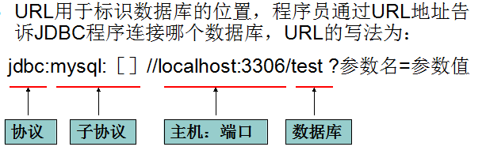

0、搭建开发环境：把数据库驱动jar包加入到应用的构建路径（classpath）
1、注册驱动2、获取与数据库的连接
3、创建代表SQL语句的对象
4、执行SQL语句
5、如果执行的查询语句，返回结果集，遍历结果集
6、释放占用的资源
三.JDBC中常用接口或类详解
1、DriverManager：
1.1注册驱动
方式一：DriverManger.registDriver(new com.mysql.jdbc.Driver());
不建议使用：
1、查看Driver的源代码可以看到，如果采用此种方式，会导致驱动程序注册两次，也就是在内存中会有两个Driver对象。2、程序依赖mysql的api，脱离mysql的jar包，程序将无法编译，将来程序切换底层数据库将会非常麻烦。
方式二(推荐)：Class.forName(“com.mysql.jdbc.Driver”);
1.2获取与数据库的连接
常用url的写法：
Oracle写法：jdbc:oracle:thin:@localhost:1521:sidSqlServer写法：jdbc:microsoft:sqlserver://localhost:1433; DatabaseName=sidMySql写法：jdbc:mysql://localhost:3306/sid
常用属性：useUnicode=true&characterEncoding=UTF-8
方式一：DriverManager.getConnection(String url,String username,String password);
url:数据库厂商和JDBC之间的协议
具体的url地址参考数据库的说明文档
mysql:
jdbc:mysql://localhost:3306/day15
方式二：
DriverManager.getConnection(String url,Properties props);
props:
数据库的一些参数配置
方式三：
DriverManager.getConnection(String url);
2、Connection:客户端与数据库所有交互都是通过connection对象完成的
Statement createStatement();创建代表SQL语句的对象createStatement()：创建向数据库发送sql的statement对象。
prepareStatement(sql) ：创建向数据库发送预编译sql的PrepareSatement对象。prepareCall(sql)：创建执行存储过程的callableStatement对象。setAutoCommit(boolean autoCommit)：设置事务是否自动提交。commit() ：在链接上提交事务。rollback() ：在此链接上回滚事务。
3、Statement
ResultSet executeQuery(String sql):sql一定要用查询语句；专门用来执行查询的
int executeUpdate(String sql):sql一般为DML（INSERT DELETE UPDATE）语句，不能执行查询语句；返回值是该条语句影响到的行数。
boolean execute(String sql):sql可以是任意语句。如果是查询语句，有结果集，返回是true；否则就是false。 特别注意：并不是成功与否。
addBatch(String sql) ：把多条sql语句放到一个批处理中。
executeBatch()：向数据库发送一批sql语句执行。4、ResultSet：代表Sql语句的执行结果。

boolean next();
boolean previous();向上移动游标
boolean absolute(int count);//第一条记录就是1
void beforeFirst()把游标移动到第一行的前面
void afterLast()把游标移动到最后一行的后面
获取任意类型的数据：getObject(int index)getObject(string columnName)获取指定类型的数据，(封装数据时方便)例如：getString(int index)getString(String columnName)
四、JDBC中释放资源
public class JdbcUtil {private static String driverClass;private static String url;private static String user;private static String password;static{try {ClassLoader cl = JdbcUtil.class.getClassLoader();InputStream in = cl.getResourceAsStream("dbcfg.properties");Properties props = new Properties();props.load(in);driverClass = props.getProperty("driverClass");url = props.getProperty("url");user = props.getProperty("user");password = props.getProperty("password");Class.forName(driverClass);} catch (Exception e) {throw new ExceptionInInitializerError(e);}}public static Connection getConnection() throws Exception{Connection conn = DriverManager.getConnection(url,user,password);return conn;}public static void release(ResultSet rs,Statement stmt,Connection conn){if(rs!=null){try {rs.close();} catch (SQLException e) {e.printStackTrace();}rs = null;}if(stmt!=null){try {stmt.close();} catch (SQLException e) {e.printStackTrace();}stmt = null;}if(conn!=null){try {conn.close();} catch (SQLException e) {e.printStackTrace();}conn = null;}}}

PreparedStatement stmt = null;
ResultSet rs = null;
try{
conn = JdbcUtil.getConnection();
stmt = conn.prepareStatement("select id,name,gender,birthday,phone from customer");
rs = stmt.executeQuery();
List<Customer> cs = new ArrayList<Customer>();
while(rs.next()){
Customer c = new Customer();
c.setId(rs.getString("id"));
c.setName(rs.getString("name"));
c.setGender(rs.getString("gender"));
c.setBirthday(rs.getDate("birthday"));
cs.add(c);
}
return cs;
}catch(Exception e){
throw new DaoException(e);
}finally{
JdbcUtil.release(rs, stmt, conn);
}
}
public void save(Customer c) {
Connection conn = null;
PreparedStatement stmt = null;
ResultSet rs = null;
try{
conn = JdbcUtil.getConnection();
stmt = conn.prepareStatement("insert into customer (id,name,gender,birthday) values (?,?,?,?)");
stmt.setString(1, c.getId());
stmt.setString(2, c.getName());
stmt.setString(3, c.getGender());
stmt.setDate(4, new java.sql.Date(c.getBirthday().getTime()));
stmt.executeUpdate();
}catch(Exception e){
throw new DaoException(e);
}finally{
JdbcUtil.release(rs, stmt, conn);
}
}
public void delete(String customerId) {
Connection conn = null;
PreparedStatement stmt = null;
ResultSet rs = null;
try{
conn = JdbcUtil.getConnection();
stmt = conn.prepareStatement("delete from customer where id=?");
stmt.setString(1, customerId);
stmt.executeUpdate();
}catch(Exception e){
throw new DaoException(e);
}finally{
JdbcUtil.release(rs, stmt, conn);
}
}
public Customer findOne(String customerId) {
Connection conn = null;
PreparedStatement stmt = null;
ResultSet rs = null;
try{
conn = JdbcUtil.getConnection();
stmt = conn.prepareStatement("select id,name,gender,birthday from customer where id=?");
stmt.setString(1, customerId);
rs = stmt.executeQuery();
if(rs.next()){
Customer c = new Customer();
c.setId(rs.getString("id"));
c.setName(rs.getString("name"));
c.setGender(rs.getString("gender"));
c.setBirthday(rs.getDate("birthday"));
return c;
}
return null;
}catch(Exception e){
throw new DaoException(e);
}finally{
JdbcUtil.release(rs, stmt, conn);
}
}
public void update(Customer c) {
Connection conn = null;
PreparedStatement stmt = null;
ResultSet rs = null;
try{
conn = JdbcUtil.getConnection();
stmt = conn.prepareStatement("update customer set name=?,gender=?,birthday=? where id=?");
stmt.setString(1, c.getName());
stmt.setString(2, c.getGender());
stmt.setDate(3, new java.sql.Date(c.getBirthday().getTime()));
stmt.executeUpdate();
}catch(Exception e){
throw new DaoException(e);
}finally{
JdbcUtil.release(rs, stmt, conn);
}
}
七、PreparedStatement接口
Statement会使数据库频繁编译SQL，可能造成数据库缓冲区溢出。PreparedStatement 可对SQL进行预编译，从而提高数据库的执行效率。并且PreperedStatement对于sql中的参数，允许使用占位符的形式进行替换，简化sql语句的编写。